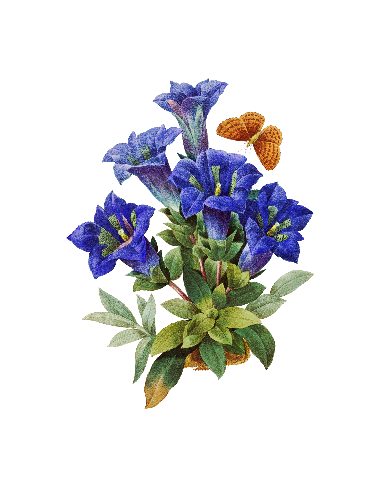

Floral Spring Rolls

Ingredients
- 1 head of romaine lettuce
- Seasonal flowers (such as violets or pansies)
- Seasonal greens (such as dandelion or wild spinach)
- Seasonal herbs (such as lemon balm or mint)
- Seasonal berries (such as blackberries or wild strawberries)
- Garden vegetables (such as carrots or cucumbers)
Utensils & Cookware
- A sharp blade and cutting board
- A mortar and pestle
Instructions
- Prepare the foragables by rinsing them in water and patting them dry.
- Separate the romaine lettuce leaves and set them aside. The true fun is about to begin!
- Let the season's bounty guide you. Prune and chop unruly leaves, mash fresh berries into a smooth jam, and experiment! Your spring rolls should be crafted to your taste.
- Once the foragables have been prepared to your liking, spread them along the vein of the romaine leaves.
- Fold the long side of the romaine leaf over your filling and roll it taut — careful not to tear it.
- If you have any foragables left, mash them into a fine paste and use them as a dipping sauce for your floral spring rolls.